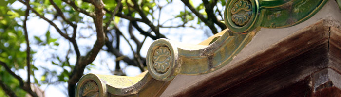
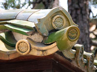
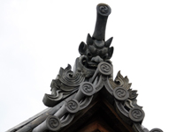
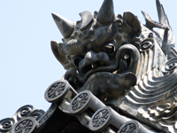
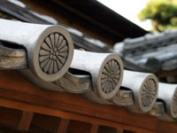
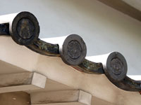
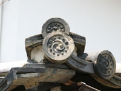
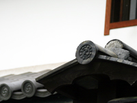
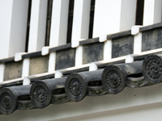
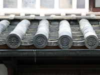

TILE CREST瓦紋

美観地区一帯で見られる屋根では、丸瓦と平瓦を交互に重ねた本葺瓦が多く使用されています。瓦葺屋根は古代の寺院や土蔵、城などに用いられていましたが、江戸時代中頃から防火の為、一般民家の屋根でも葺かれるようになりました。現在、見ることの出来る瓦は明治後期～大正頃のものとされています。よく目にするのは丸瓦に刻まれた三つ巴で、この周りに連珠文と呼ばれる円形の模様が並んでいます。この三つ巴には色々種類が見られます。巴紋が時計回りか反時計回りであるとか円形模様が12個や16個のものがあります。また、平瓦には瓦が作られた産地の紋が刻まれており、この紋で産地がわかるものもあります。平瓦の文様から、酒津（倉敷市）、二日市（岡山市）、播磨（兵庫県伊津町）、八田（真備町）、服部（真備町）の5つの産地を知ることが出来ます。
有隣荘の瓦紋

有隣荘の瓦は特殊な釉薬が使われており、泉州（現在の大阪府和泉市）で作られています。丸瓦には大原家旧住宅と同じ「向かい松」が刻まれています。
阿智神社の瓦紋

阿智神社拝殿の丸瓦に見られる「三つ巴」は、一般的な三つ巴に連珠文が無い紋が刻まれています。また、平瓦には酒津産の紋が刻まれています。
観龍寺の瓦紋

観龍寺の本堂には、三つ巴や龍謄、菊などが丸瓦に刻まれており、平瓦には酒津産の紋が刻まれています。本堂の瓦は一番古いもので約250年前のものといわれています。
誓願寺の瓦紋

誓願寺正面門構え丸瓦には天皇所縁の菊花紋が刻まれています。その昔、使用することが許さた由緒正しき場所であることが伺えます。
二日市産の瓦紋

大原家旧住宅には家紋である「向かい松」が丸瓦に刻まれており、平瓦には二日市産の紋が刻まれています。
酒津産の瓦紋

井上家の瓦には一般的にもよく見られる「三つ巴」が丸瓦に刻まれており、平瓦には酒津産の紋が刻まれています。
播磨産の瓦紋

倉敷川沿いにある旅館鶴形の瓦には、「三つ巴」が丸瓦に刻まれており、平瓦には播磨産の紋が刻まれています。
八田産の瓦紋

倉敷考古館の丸瓦には「三つ巴」が刻まれており、平瓦には八田産の紋が刻まれています。
服部産の瓦紋

本町にある民家の丸瓦には一般的な「三つ巴」、平瓦には服部産の紋が刻まれています。
一覧に戻る